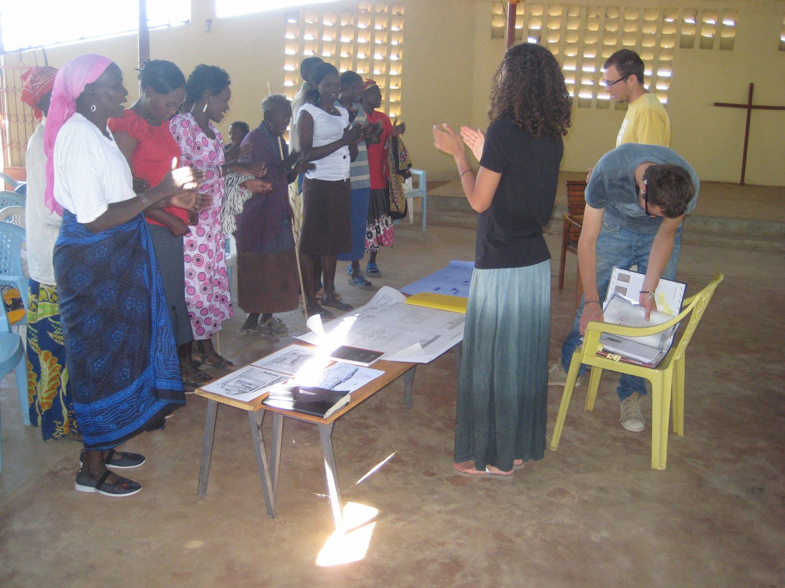
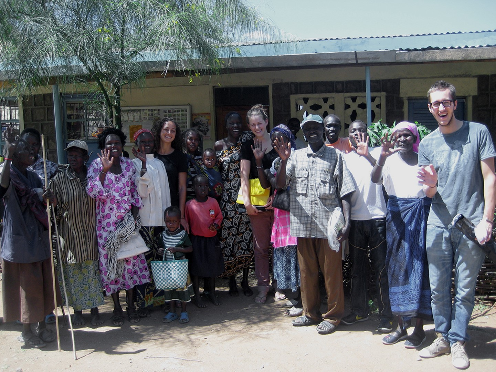
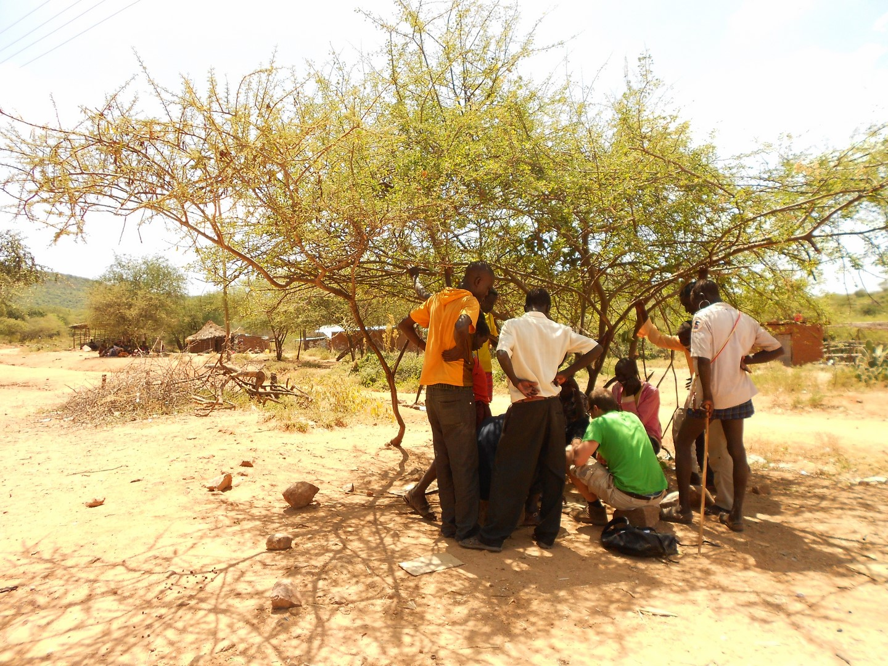

COLLABORATION
To design and construct the Pokot Resource Centre three architecture graduates and four students of Delft University of Technology collaborate with the Pokot community and the East Pokot Medical Project (EPMP). After construction, EPMP will manage and maintain the centre with locals as employees who, over time, will take on more and more responsibilities.
Architecture Graduates
We (Carlijn Kingma, Niek van Laere and Stefanie Tseggai) came in contact with the project coordinator of EPMP, Sr. Esther Ngima Mwaniki, during our studies at Delft University of Technology through the minor International Entrepreneurship and Development (IE&D) from the faculty of Technology, Policy and Management (TBM).
In 2012, we have been in Barpello with the Pokot for two and a half months. We observed daily lives, attended rituals and studied local building traditions. Together with the community and the EPMP, we developed a program of requirements, selected the building site and developed the concept for the initial design of the centre. During these months, we managed to raise a large sum of money for the project. Hereafter we decided to put the project on hold and first finish our studies in Delft before continuing the project. In 2016 the EPMP and we continued fundraising for realisation of the centre.
Our goal is to design a centre that is durable and provides a healthy and comfortable environment for gatherings, trainings and workshops. We make the design of the centre in close collaboration with the Pokot community and the EPMP and together we will build the centre. After realisation of the Pokot Resource Centre, we will continue to promote and organize cooperation between the Pokot and the Netherlands. For example student exchanges with Delft University of Technology.

East Pokot Medical Project
The East Pokot Medical Project (EPMP) has been providing health care and education in the East Pokot region since 1980, because the Kenyan government has been neglecting these services in the area. The EPMP operates in close collaboration with the missionaries present in the region.
Moreover, the EPMP has initiated projects in order to enable locals in economic progress, such as the Honey House (beekeeping) and Maendeleo (clothing production).
The goal of EPMP is to improve the overall health standard of the semi-nomadic, pastoral Pokot people by providing health services in the remote East Pokot region. To achieve this they provide medical treatments, medicine and consultation in two dispensaries located in Barpello and Kositei. Next to this, they organize daily mobile clinics to provide medical information and to monitor the health of babies, young children and their mothers.
The original focus of the EPMP was preventive: hygiene and nutrition instructions, vaccination of children, pre- and postnatal care. In the course of the years the focus has shifted to medical treatment, however many health problems, such as diarrhoea, malaria and HIV/aids, can be prevented by education.
After construction of the resource centre EPMP will manage and maintain the resource centre with locals as employees who, over time, will take on increasing responsibilities.

Pokot Community
Pokot are nomadic pastoralist people. Their nomadic living pattern (pursuit of pasture and water) makes it very complicated to invest in permanent houses and sanitary structures. However, more and more people are settling in one place and also modernization has reached East Pokot, such as the use of mobile phones. A traditional Pokot life is based on communal welfare. A council of elders decides on all issues concerning the community. Woman and children are not in a position to influence any choices.
Most valued by the Pokot is their cattle and being part of the community, for example by rites of passage such as circumcision. The arrival of missionaries and their schools has created conflicting values for younger Pokot. Many of the youth consider education as the ticket to development.
The local community has contributed to development of the program for the centre and will help to construct the centre. After realisation they will be involved in exploitation and maintenance of the building.

Students Delft University of Technology
A group of four students will help us with preparation of construction, set up a business plan and develop a water management plan for the centre.
The location of the centre is a remote rural region, only accessible by dirt roads. Two students (from the faculty of Technology, Policy and Management) will manage the inventory, purchasing, collection, renting and transportation of all materials and tools needed during construction.
The centre will have a roof that collects rainwater. Two students (from the faculty of Civil Engineering and Geosciences) will develop a system that distributes the water from the roof via a tank to a tap point, where it can be used for drinking.